Python
Quilt(InsideOut)
This is a quilt pattern I created using Python inspired by the theme of "Inside Out." Users can generate the pattern by specifying the number of columns and rows, square size, and spacing. (Inspired by Deborah R. Fowler) https://deborahrfowler.com/ClassHandouts/VSFX705-Quilt.html
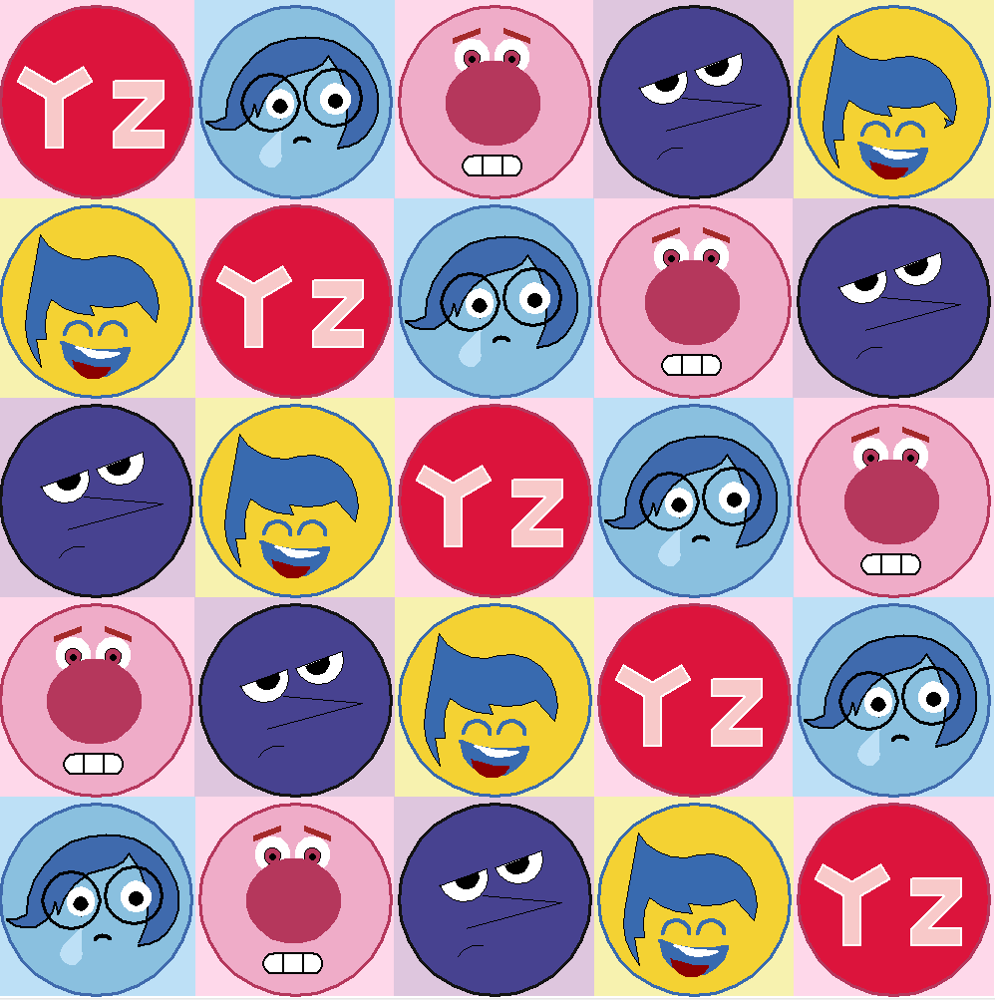
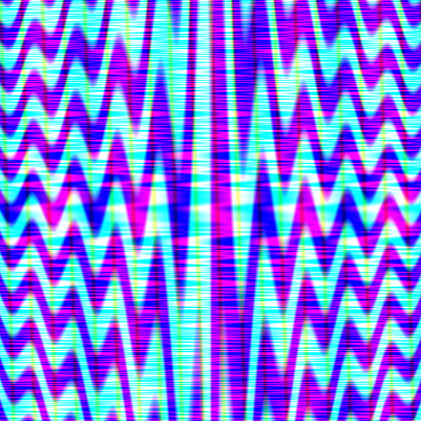
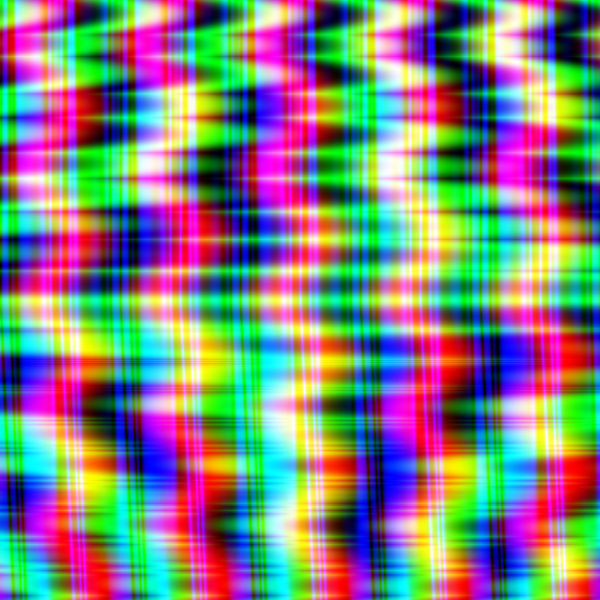
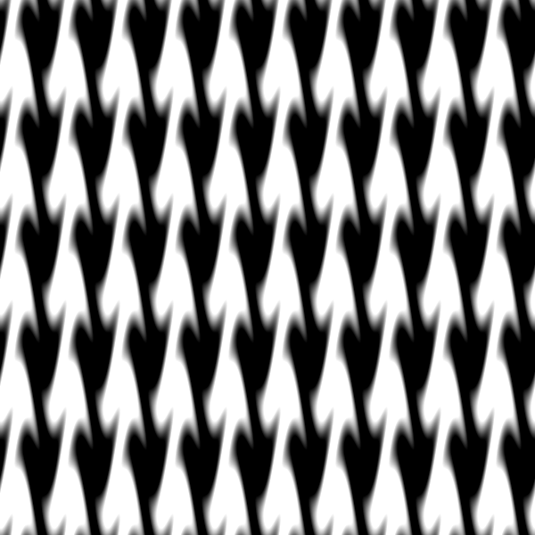
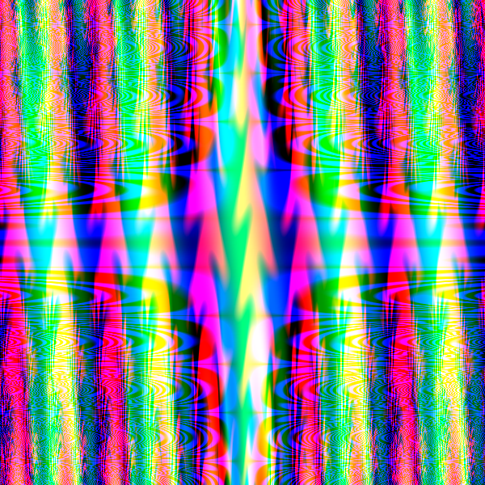
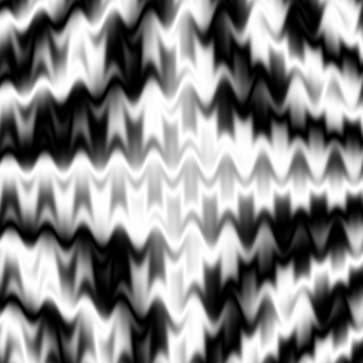
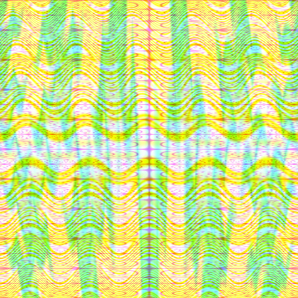
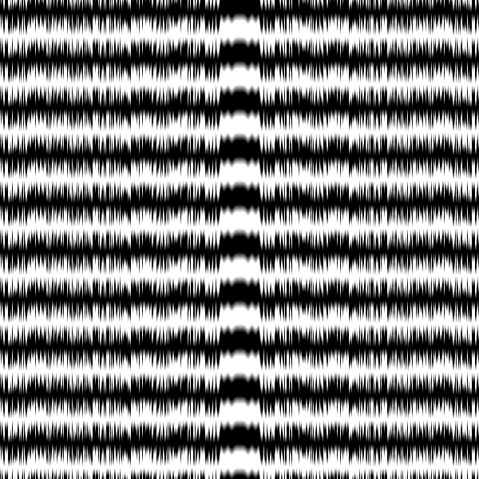
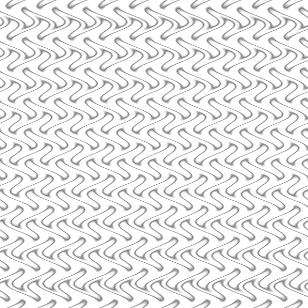
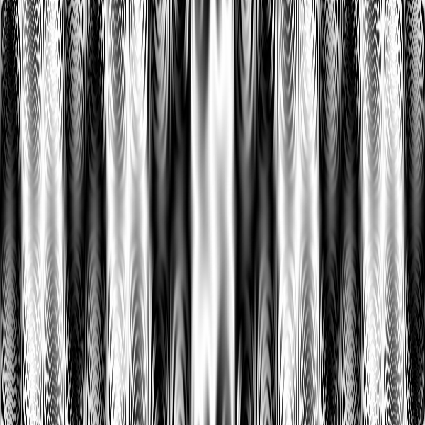
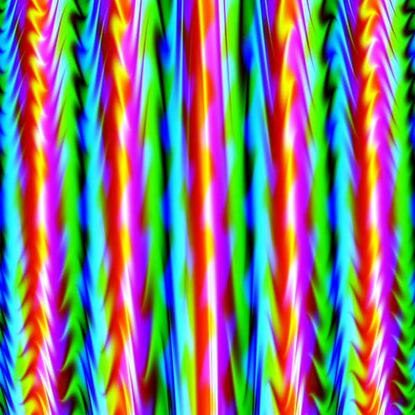
Random Art
Create a Python program using recursion to generate random symbolic math expressions for visual "random art" and output the results as images. (Inspired by Deborah R. Fowler) https://deborahrfowler.com/ClassHandouts/VSFX705-RandomArt.html
Houdini Script
Use Python to parse motion capture data, split it into files for Houdini, and create a visual representation. (Inspired by Deborah R. Fowler) https://deborahrfowler.com/ClassHandouts/VSFX705-HoudiniMocap.html